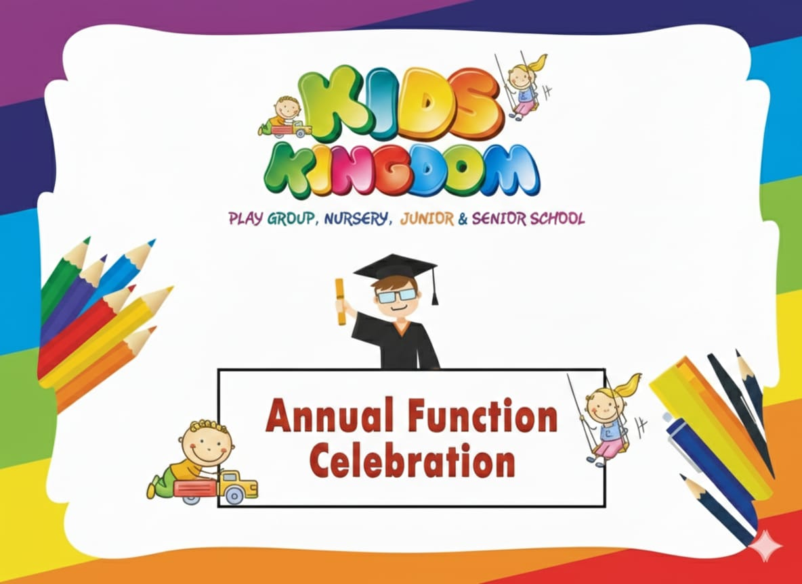
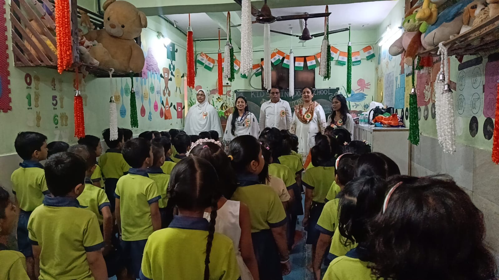
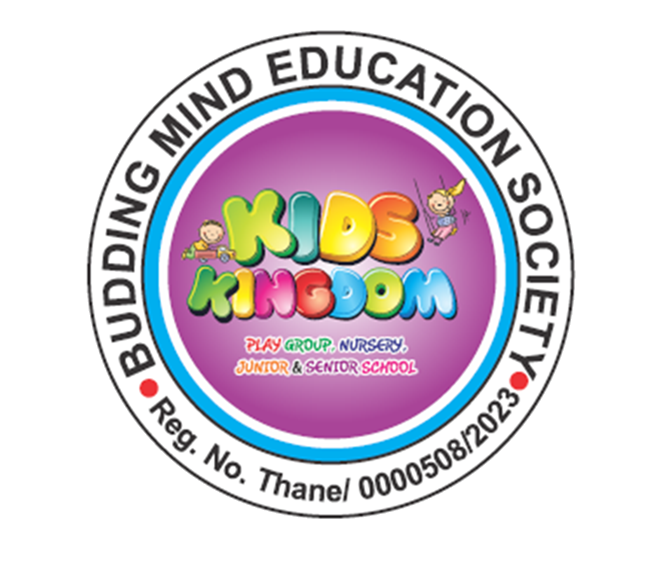

Our Gallery





Pre Primary School
Admissions Open for Play Group, Nursery, Junior KG and Senior KG
Admission OpenKids Kingdom is a leading pre primary school in Ulhasnagar providing a safe and nurturing environment for children. We focus on play-based learning to help children develop confidence, creativity and communication skills.
Read MoreWe provide a safe and friendly environment where children can learn and grow happily.
Our trained and caring teachers provide personal attention to every child.
Learning through activities and fun helps children develop creativity and confidence.
Small batches allow better interaction and individual attention.
Every child is important to us and we support their overall development.
Our Annual Day programs help students build confidence and stage performance skills.
Kids Kingdom classrooms are fully monitored with CCTV for enhanced safety and peace of mind for parents.


Kids Kingdom
Kids Kingdom is a wonderful preschool in Ulhasnagar. The teachers are caring and the environment is very safe. My child enjoys going to school every day.
Kids Kingdom
We are very happy with Kids Kingdom preschool. The learning activities are excellent and teachers give personal attention to every child.
Welcome to Kids Kingdom Pre Primary School in Ulhasnagar. We provide a warm, safe and joyful learning environment for young children. Kids Kingdom is one of the trusted preschools in Ulhasnagar offering Playgroup, Nursery, Junior KG and Senior KG programs. We understand that parents want the best preschool education for their children. Our school focuses on building strong foundations through play-based learning, creativity and interactive activities.
At Kids Kingdom, we focus on the overall development of every child. Our teaching methods help students develop communication skills, confidence, creativity and social interaction. Our classrooms are designed to be colorful, safe and child-friendly so that children enjoy learning every day.
Safety and hygiene are our top priorities. Our classrooms are clean and well-maintained and children learn in a comfortable environment with proper supervision from experienced teachers. We believe that early childhood education should be enjoyable, meaningful and memorable for every student.
At Kids Kingdom, we organize an Annual Day function every year which gives students an opportunity to perform on stage. This helps children build confidence, communication skills and personality development from an early age. Parents always appreciate this special event as it encourages children to express themselves freely.
If you are looking for a reliable and caring preschool in Ulhasnagar, Kids Kingdom is the perfect place for your child's first step into education.